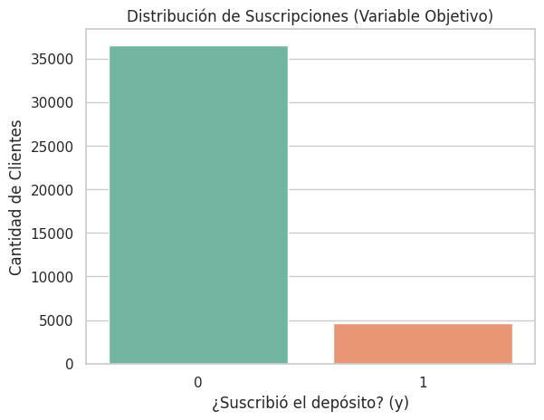
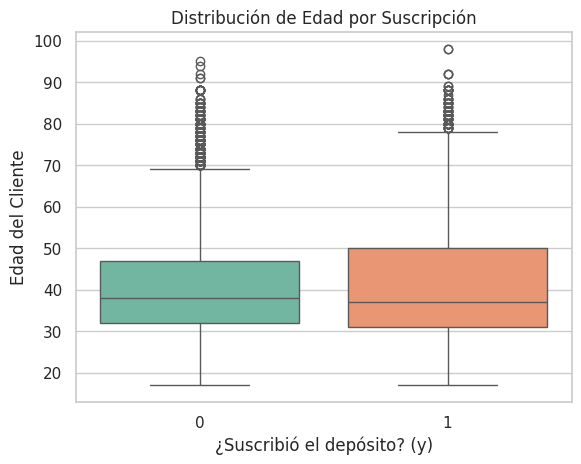
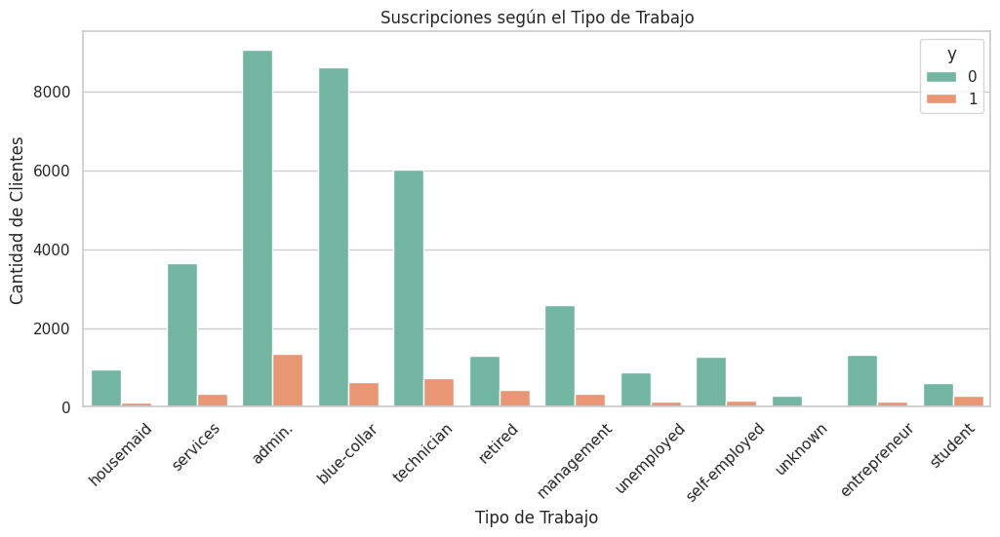
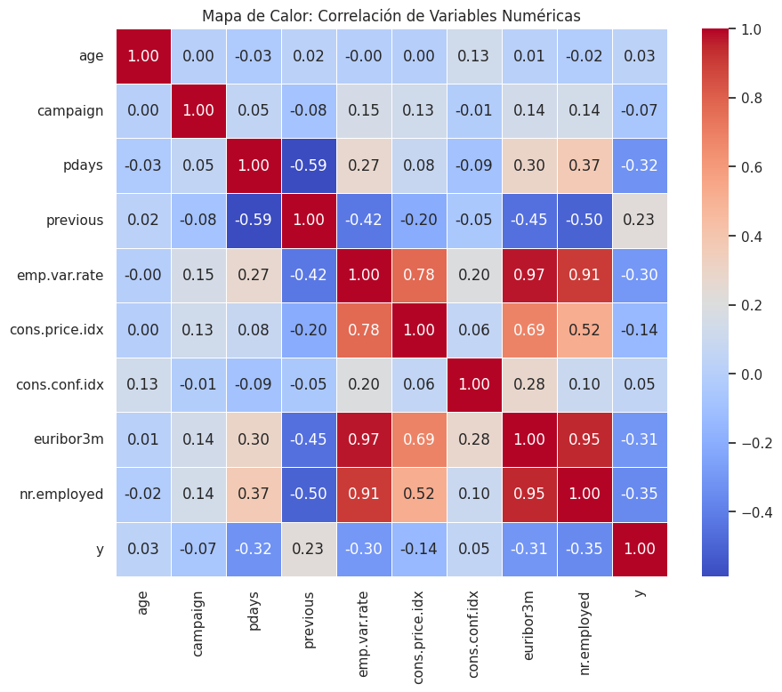
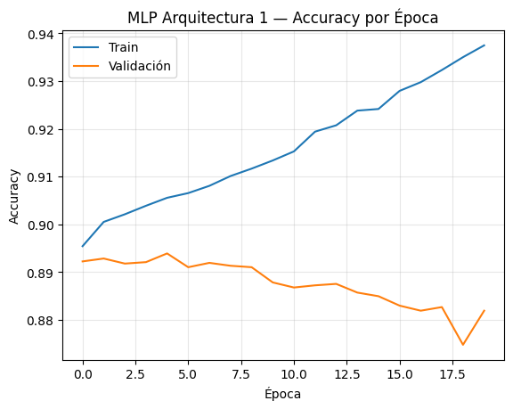
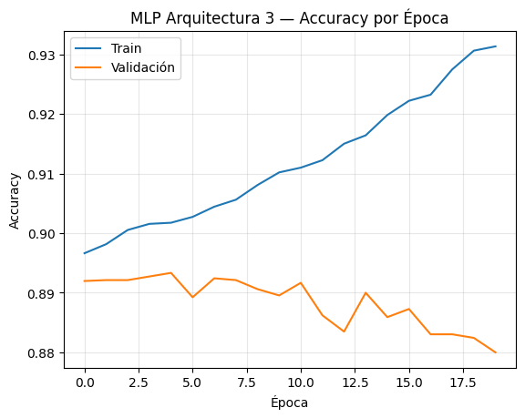
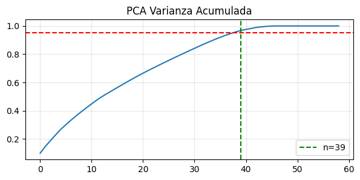
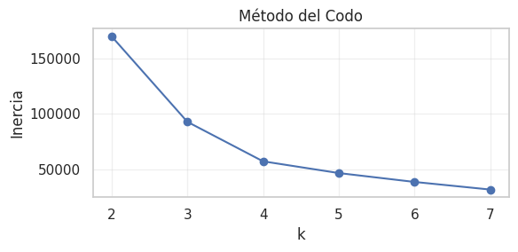
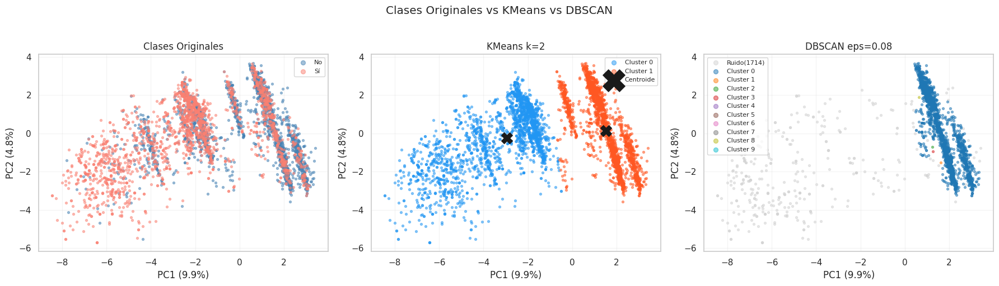

Optimización de Campañas
de Marketing Bancario
Predicción de suscripción a depósitos a plazo fijo mediante modelos clásicos y Deep Learning
Mateo Bazán Rojas — Científico de Datos
5 de Mayo, 2026
Dataset: Bank Marketing (UCI) · 45.211 contactos
Contexto & Reto Principal
El banco portugués realiza campañas telefónicas para ofrecer depósitos a plazo. El objetivo es predecir qué clientes se suscribirán ("yes") para optimizar recursos y aumentar la eficiencia.
No suscribe (clase 0)
Sí suscribe (clase 1)
Registros positivos

Análisis Exploratorio (EDA)



Preprocesamiento Inteligente
- Eliminación columna "default" (20.8% unknown) y "duration" (data leakage)
- One‑Hot Encoding: 19 → 60 características
- Escalado StandardScaler para SVM y Redes Neuronales
- Partición estratificada 80/20 manteniendo proporción original
Train
8,238
Test
Flujo de preprocesamiento:
- Eliminación de columnas con alto % de "unknown" (default) y data leakage (duration)
- One-Hot Encoding de variables categóricas (9 columnas → 41 nuevas)
- Escalado con StandardScaler (media=0, std=1)
- Partición train/test 80/20 estratificada (mantiene proporción de clases)
Modelos Clásicos & Cross-Validation
Entrenamiento con Decision Tree (max_depth=5), Random Forest (n=10), SVM (kernel RBF). Validación cruzada estratificada (k=5) para robustez.
Decision Tree
Test Accuracy
Random Forest
Test Accuracy
SVM (RBF)
Test Accuracy

Interpretabilidad: ¿Qué impulsa la suscripción?
Las condiciones macroeconómicas (tasa Euribor, empleo) pesan más que atributos demográficos individuales.
Mejor Modelo Clásico: Decision Tree (max_depth=5)
Accuracy test: 0.903 | Diferencia train-test sólo 1.37% → excelente generalización, sin overfitting.
✅ Falsos Positivos (FP): Llamada innecesaria, coste operacional bajo.
Recomendación: priorizar Recall (minimizar FN) ajustando umbral.
Deep Learning: Perceptrón Multicapa
Evaluación de 3 arquitecturas profundas (TensorFlow/Keras) con 20 épocas, optimizador Adam, función sigmoide.


Conclusiones & Recomendaciones Estratégicas
- Modelo recomendado: Decision Tree (max_depth=5) por su equilibrio entre simplicidad, interpretabilidad y accuracy (90.3%).
- Aunque SVM RBF logra accuracy ~90.1%, el árbol de decisión ofrece reglas claras para el negocio.
- El desbalance extremo limita el recall; se sugiere usar técnicas como SMOTE o ajuste de umbral de clasificación para capturar más clientes potenciales.
- Deep Learning no supera a los modelos clásicos con los datos actuales, pero podría beneficiarse de más datos o aumento sintético.
- Variables macroeconómicas (euribor3m, empleo) son drivers críticos: el banco debe segmentar campañas en contextos económicos favorables.
Aprendizaje No Supervisado: Segmentación de Clientes
Análisis de clusters sobre los datos transformados (PCA previa) para descubrir patrones naturales sin usar la etiqueta de suscripción.


No separa bien las clases originales (sí/no)
Mayor granularidad
143 clusters + 1714 ruido

Código, Documentación & Q&A
Repositorio completo con notebook de Colab, preprocesamiento, entrenamiento y análisis de resultados:
• ¿Cómo se gestionó el data leakage? (eliminación de 'duration')
• ¿Qué umbral de decisión maximiza el recall?
• Escalabilidad del modelo: inferencia en tiempo real.
mateo.bazan@example.com